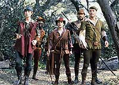
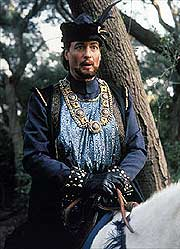
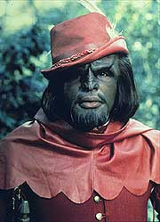
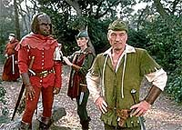
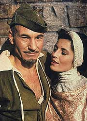

|
MANCHETE
DO EPISDIO
Picard
se apaixona e vira Robin Hood
em mais uma peripcia criada por Q
Episdio
anterior | Prximo
episdio
Sinopse:
Data Estelar: 44741.9.
Enquanto a USS Enterprise organiza um simpsio de arqueologia,
Picard retoma um romance antigo com Vash, uma arqueloga que ele
conheceu quando esteve de frias, no ano passado. A paixo entre
os dois abalada quando Vash descobre que Picard nunca contou
sobre ela a seus amigos e quando ele descobre que ela planeja fazer
uma excurso secreta a um planeta proibido para no-residentes.
 A
criatura conhecida como Q testemunha secretamente uma discusso
entre os dois. Mais tarde ele aparece para Picard e tenta tirar dele
uma confisso de amor. O capito se recusa, e Q responde
transformando Picard em Robin Hood e enviando-o para a floresta de
Sherwood, onde ele reunido com sua tripulao, que agora so
seu bando.
Q assume o papel de xerife de Nottingham, e diz a Picard que Vash,
que agora a Lady Marian, ser decapitada no dia seguinte
--desafiando Picard a arriscar a vida de sua tripulao para
salvar uma mulher com quem ele supostamente no se importa. O capito
diz que faria o mesmo por qualquer outra pessoa e prepara-se para ir
ao resgate de Vash, mas ordena que seus tripulantes permaneam na
floresta.
Enquanto isso, Vash consegue evitar sua execuo ao prometer se
casar com seu captor, sir Guy. Temendo que essa mudana faa com
que Picard tente salv-la, Q pede a sir Guy que mantenha o
casamento em segredo. Picard finalmente chega para resgatar Vash,
mas ela decide que essa misso de um homem s muito perigosa e
diz que pode cuidar de si mesma.
Momentos depois, ela surpreende Picard roubando sua espada e
entregando-o a sir Guy. Q se delicia com a noo de que Vash se
virou contra o capito, at descobrir que ela est escrevendo
tripulao para que venha ao resgate de Jean-Luc. Q a entrega para
sir Guy, que decide execut-la junto a Picard no dia seguinte.
 Segundos
antes de Picard ser decapitado, seus tripulantes aparecem, disfarados
como monges. Data cria uma distrao e Picard e Vash escapam de
seus captores. O capito vence sir Guy entram em um combate de
espadas e vai ao encontro de Vash, concluindo o desafio de Q.
Picard e sua tripulao so devolvidos Enterprise, mas Vash no
est com eles. Para o alvio do capito, ela volta a aparecer
logo depois, anunciando seus planos de viajar pelo Universo com Q.
Embora a idia incomode Jean-Luc, ele admite que ela e Q tm muito
em comum, e aceita a deciso, com a promessa de Q de que Vash estar
em segurana.
Comentrios:
Ah, o amor
lindo! "Qpid" usa e abusa da entidade onipotente
mais carismtica do Universo para colocar o capito Picard em uma
situao incomum: alm de apaixonado, ele precisa encenar uma
fantasia de Q na floresta de Sherwood, no papel de ningum menos
que Robin Hood.

inegvel que as situaes cmicas do episdio divertem. So
hilrias as cenas em que o capito dissimula seu interesse por
Vash diante de sua tripulao, seu constragimento ao apresentar
sua "amiga" dra. Crusher, a revolta de Worf para com os
talentos musicais de Geordi e os dilogos cortantes de Q, ao
descobrir um ponto fraco em seu capito preferido.
Por outro lado, no se pode colocar esse episdio ao lado dos
melhores de Q na Nova Gerao, como "Tapestry",
"Q Who?" e "Deja Q". O fato de a
histria ser muito menos significativa e a incompreensvel paixo
de Picard por Vash acabam jogando contra.
Nesta aventura, Q comea a mostrar que no est sempre jogando
contra a humanidade, mas sim providenciando cenrios para que
Jean-Luc Picard e seus comandados entendam mais sua prpria
natureza. Apesar do sadismo, Q continua a fazer sua transio de
vilo e heri, consagrada totalmente em "All Good Things...",
o ltimo episdio da srie.
 O
outro personagem recupeado de episdios passados, Vash, j no
pode ser listado como uma boa adio lista dos recorrentes de Jornada
nas Estrelas. Em "Captain's Holyday" sua presena
at que foi til, mas ela nunca deveria ter sido trazida para um
novo episdio. Infelizmente, para essa histria especfica, ela
realmente se apresentava como a nica opo disponvel.
A idia toda roubar a grandiosidade das histrias de Robin Hood,
trocando os personagens seculares por nossos heris do sculo 24.
Infelizmente, a grandiosidade e o esprito de aventura no puderam
ser capturadas, mantendo toda a histria meramente como um episdio
de comdia.
Alm disso, h coisas meio difceis de engolir, como Picard ainda
se importar com Vash depois de ela recusar seu esforo de salv-la
e ainda tra-lo, ajudando a rend-lo para as autoridades de
Nottingham. Outra coisa que esquisita, mas no importante,
distrao providenciada por Data na hora de salvar Picard de
perder a cabea. Ele tira uma pea de seu brao e joga em uma
tocha. Que suas peas sejam explosivas, at podemos aceitar, mas
que sejam to descartveis assim para o bom funcionamento do andride
j mais complicado de engolir.
Em termos tcnicos, temos bons valores de produo. As maquiagens
e o vesturio da Inglaterra medieval esto bastante convincentes,
com especial destaque para a engraada caracterizao de Data
como o frei Tuck. Os cenrios tambm esto no mesmo nvel.
 O
nico seno tcnico da produo a cena em que o carrasco est
para cortar a cabea de Jean-Luc Picard e podemos ver o cu por
sobre o castelo --uma imagem de composio de elementos que no
combina em nada com a iluminao do cenrio, dando um tom at
agressivamente falso tomada.
A concluso do episdio apelou para chaves, como "o amor
move montanhas", ou "o amor supera qualquer obstculo".
Um erro, certamente. Pelo menos ficou um bom episdio para ser
exibido no Dia dos Namorados...
Citaes:
Worf - "Nice
legs... for a human."
("Belas pernas... para uma humana.")
Sir Guy - "I'll have you know I am the greatest swordsman in
all of Nottingham!"
("Voc descobrir que eu sou o maior espadachim em toda
Nottingham!")
Picard - "Very impressive. There's something you should know."
("Muito impressionante. Tem algo que voc precisa
saber.")
Sir Guy - "And what would that be?"
("E o que seria?")
Picard - "I'm not from Nottingham!"
("Eu no sou de Nottingham!")
Trivia:
 Ira Steven Behr, criador de Vash
e produtor da terceira temporada da Nova Gerao, sugeriu
que a Camelot do Rei Arthur fosse utlizada como palco para o tringulo
formado por Picard-Vash-Q. Mas Michael Piller quis que a histria
se passasse na floresta de Sherwood, que, graas ao filme de Kevin
Costner, estava na moda naquela poca.
Ira Steven Behr, criador de Vash
e produtor da terceira temporada da Nova Gerao, sugeriu
que a Camelot do Rei Arthur fosse utlizada como palco para o tringulo
formado por Picard-Vash-Q. Mas Michael Piller quis que a histria
se passasse na floresta de Sherwood, que, graas ao filme de Kevin
Costner, estava na moda naquela poca.
Durante
as filmagens de uma luta com espadas, Jonathan Frakes, que dispensou
o uso de um dubl, se feriu no olho quando sua espada quebrou
durante a seqncia.
O
destino da dupla formada por Q e Vash seria revelado apenas no episdio
de Deep Space Nine "Q-Less",
da primeira temporada.
Aps
este episdio, Q retorna apenas na sexta temporada, em "True-Q".
E Vash no ser mais vista na Nova Gerao.
Ficha
tcnica:
Roteiro de Ira Steven Behr
Histria de Ira Steven Behr e Randee Russell
Direo de Cliff Bole
Exibido em 22/04/1991
Produo: 094
Elenco:
Patrick Stewart como
Jean-Luc Picard
Jonathan Frakes como William Thomas Riker
Brent Spiner como Data
LeVar Burton como Geordi La Forge
Michael Dorn como Worf
Gates McFadden como Beverly Crusher
Marina Sirtis como Deanna Troi
Elenco convidado:
John de Lancie
como Q
Jennifer Hetrick como Vash
Clive Revill como Sir Guy
Joi Staton como serva
Episdio
anterior | Prximo
episdio
|